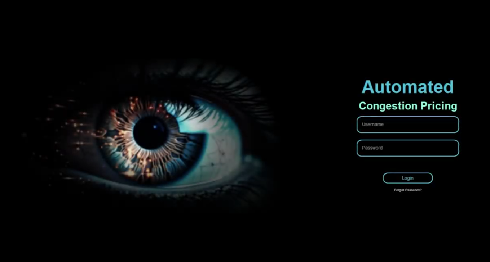
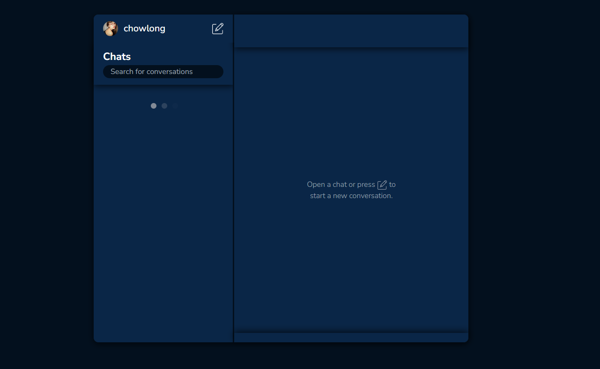

Hello world!!!
I am...
Adriane
:))
Welcome to my web portfolio!!
About me
I am Adriane (aka noodelz/chowlong), a passionate software developer. I have built complex systems and applications that helped me grow as a programmer, and I am eager to learn more about the industry of software development.
My projects
-
CS Expo 2024
This website showcases the CS Expo 2024 event held by FEU Institute of Technology on November 19, 20, and 22, 2024. Featuring innovative theses from computer science students regarding topics such as data analytics, healh, natural language processing (NLP), and computer vision, it is a highly regarded and anticipated annual event where skilled professionals and esteemed professors gather to partake in keynote talks and theses evaluations presented by the students.
-
Automated Congestion Pricing System

The Automated Congestion Pricing System is the software product of our collegiate thesis entitled: A Software Solution for the foundation of Congestion Pricing through License Plate Recognition with Image Adaptive Processing, which attained the recognition of: Best Thesis By Category for Computer Vision: Batch 1. The system supports the foundation of the congestion pricing policy and utlizes object detection, optical character recognition, and adaptive image-processing by detecting vehicles and extracting their license plate numbers via CCTV road cameras.
-
Dattebayo Chat

This web chat application is a personal project built on React which features real-time communication through Websockets enabling user-to-user communication, private/group chats, customizable profiles, adding users to conversations, and real-time message updates.
- ..and many more!
My tech stacks
Programming Languages:- Java
- Python
- PHP
- JavaScript
- TypeScript
- Go
- Tailwind
- React.js
- Next.js
- Vue.js
- Nuxt.js
- Django
- Nest.js
- Revel
- Nginx
- Docker
- AWS
- GCP
- DigitalOcean
- Bitbucket
- Relational Databases
- Redis
- MongoDB
- DynamoDB